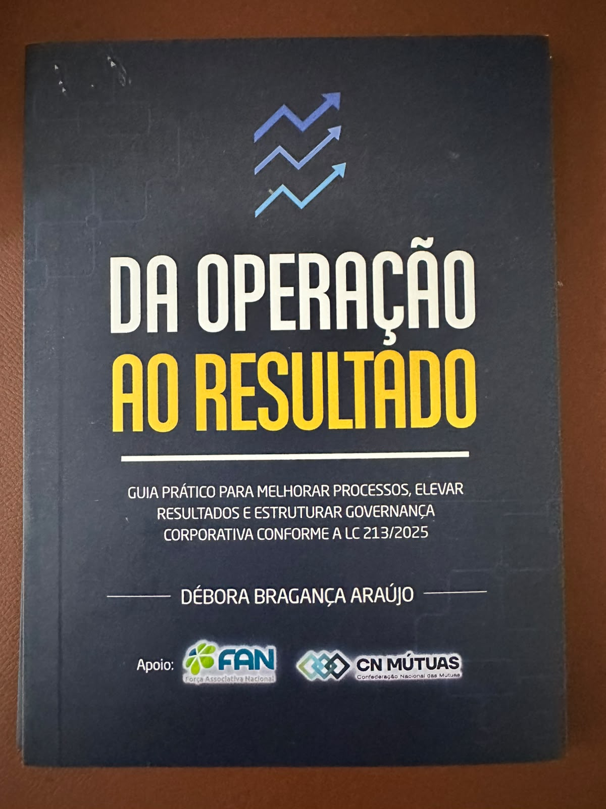

Guia prático para melhorar processos, elevar resultados e estruturar governança corporativa conforme a LC 213/2025.
Débora Bragança Araújo
Entrega física · 14 x 21 cm · ISBN 978-65-5278-492-6

Onde falta processo, o improviso vira ameaça e a falta de controle começa a cobrar sua fatura: associado sem retorno, inadimplência subindo, cadastro atrasando venda boa, financeiro não emitindo boleto no prazo.
Com a LC 213/2025, a proteção patrimonial mutualista entra em um novo ciclo de maturidade regulatória. Governança, compliance e gestão de processos deixam de ser "boas práticas" e passam a ser exigência.
Escrito por quem viveu a operação de dentro, do atendimento à liderança, e hoje estrutura processos para associações de proteção patrimonial mutualista através da Fluigi.
Como enxergar a operação como uma corrente de processos primários, de apoio e estratégicos, e por que isso muda a forma de priorizar.
Como mapear um processo do zero (o que é feito, como, quando, por quem), com exemplo real de mapeamento de assistência 24h.
DMAIC e PDCA aplicados a um caso real de inadimplência, passo a passo.
Excel, Power BI, ferramentas de mapeamento (Bizagi, Lucidchart, bpmn.io) e como usar IA como aliada sem depender cegamente dela.
O que medir, por que e como agir: marketing, comercial/adesão, cadastro, pós-venda, cobrança, eventos, assistência 24h, rastreador, atendimento e cancelamento.
Método SMART e a diferença entre meta de resultado e meta de processo.
Com a contribuição de Maíra Figueiredo, advogada especialista em mercado mutualista desde 2010: GRC (Governança, Liderança e Compliance), mapeamento de processos como base de conformidade, exemplo prático de mapeamento do processo de adesão do associado com pontos de controle GRC, e um roteiro de ouvidoria e qualidade (5 Porquês, 5W2H).
Graduada em Psicologia e especialista em Gestão de Processos, com MBA em Gestão de Processos e Metodologias Ágeis pelo IBMEC. Fundadora da Flow Assessoria e CEO da Fluigi, plataforma criada para integrar processos, pessoas e dados e elevar a maturidade das associações de proteção patrimonial mutualista.
Sua trajetória começou longe dos títulos: no chão de fábrica da operação, em 2014, aos 18 anos, no atendimento direto com comercial e associado. Passou por cadastro, RH, implantação de call center e CRM, planejamento, e ao longo de mais de dez anos estruturou processos, indicadores e equipes em várias associações, até se especializar em Green Belt e no MBA pelo IBMEC.
"O mérito desta obra está na capacidade de falar com clareza para quem lidera e para quem executa. Controle não é burocracia. É sobrevivência." Cauby Morais, Presidente da FAN e da CN Mútuas, Vice-presidente da OIES
Formato físico, 14 x 21 cm · ISBN 978-65-5278-492-6 · Ed. do Autor, Belo Horizonte/MG, 2025